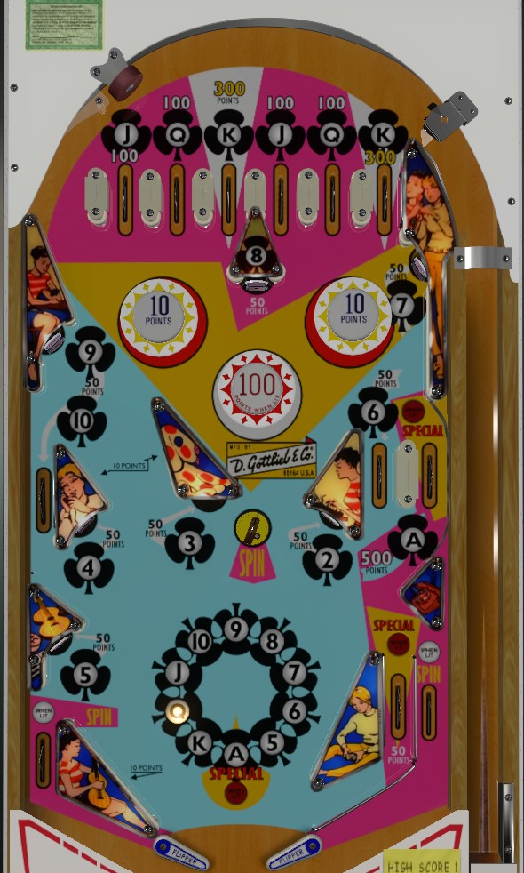

Flip-a-Card is the replay version. Card Trix is the add-a-ball version. This guide focuses primarily on Flip-a-Card, with differences observed in Card Trix mentioned at the end of the guide.
The Ace side lane on the middle-right dominates scoring. From the left flipper, shoot it directly from below. From the right flipper, shoot to the top of the game and try to nudge the ball to the right so it hits the Ace lane coming down. Collecting all of the cards is only good for lighting specials, which score free games. The Spin feature randomly spots a card from 5 through Ace (not 2-3-4; can be a card you already have) and scores its value.
The below picture is of Flip-a-Card, which was taken from the VPX recreation by Teisen.
Hit lit standup targets and rollover lanes to score playing cards.
Jack and Queen score 100 points; King scores 300 points; Ace scores 500 points. A good shot to the Ace lane from below can hit the switch going up and going down, for a chance at a colossal 1,000 points.
The center Spin saucer and out lanes spin the spot card wheel. This randomly awards credit for one card between 5 and Ace inclusive; it cannot award the 2, 3, or 4. Spotting a card awards that card's normal value (50, 100, 300, or 500 points).
10 point bumpers are always lit, unless the game is counting off something else that was scored, like a 50 or 300 or 500 point target/lane. The center bumper toggles being on or off every time a multiple of 100 points is crossed.
Collecting all 13 cards lights the Ace lane on the right, the right in lane feeding the flipper, and an Ace spin on the wheel for Special. Special stays lit for the rest of the game.
There is no left in lane, and the flipper backs up directly to the slingshot. The right side of the table bottom has a conventional in/out lane setup. The in lane scores 50 points when not lit for Special. Out lanes spin the card wheel. The only time the out lanes are not lit is when other features are being scored. There is no end of ball bonus. Tilt ends game.